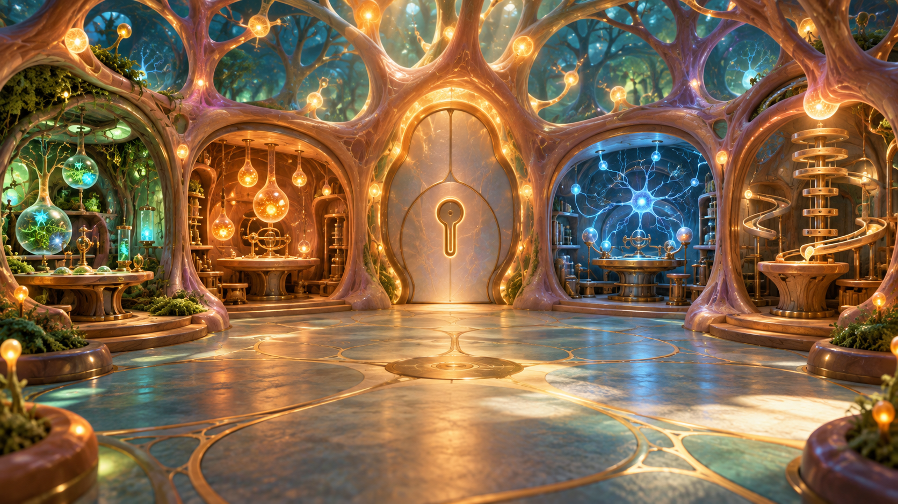

היציאה הושלמה

NEURAL ESCAPE LAB
הבריחה מהמעבדה
בסוף יום ארוך של ניסויים, גילית שהמעבדה נעולה. בשביל לצאת עליך לפתור את חידות הנוירונים בשלושת הקומות.
ההתקדמות נשמרת אוטומטית במכשיר הזה
בחרו מדען או מדענית
מצב בדיקה
פתיחת כלי הבדיקה
הזינו את קוד הבדיקה כדי לקפוץ לחדרים ולנקודות שונות במשחק. השינויים במצב זה לא יחליפו את ההתקדמות הרגילה.
מצב בדיקה פעיל
בחירת נקודת בדיקה
בחרו נקודה כדי להתחיל משם. ההתקדמות במצב הבדיקה זמנית ואינה נשמרת.
תדריך קצר
איך משחקים?
- נווטו קדימה, אחורה ולצדדים והסתובבו בתוך כל חדר.
- חפשו את קונסולת החידה; כוונו אליה והתקרבו.
- פתרו את תחנת החידה ואספו את הפריט הקסום שהופיע.
- פתחו את דלת החדר הבא באמצעות הפריט הקסום. לאחר שהמדען נכנס למעלית, הזינו את סיסמת המורה כדי לעבור לקומה הבאה.
במקלדת: W/S קדימה ואחורה, A/D וחץ ימינה/שמאלה לפסיעה, Shift+חיצים לסיבוב, E או Enter לפעולה.